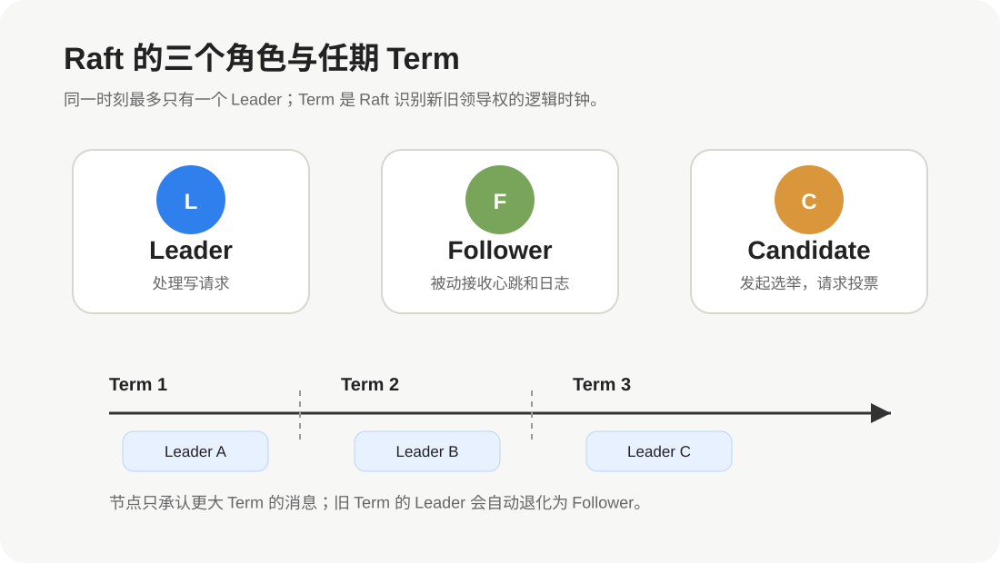
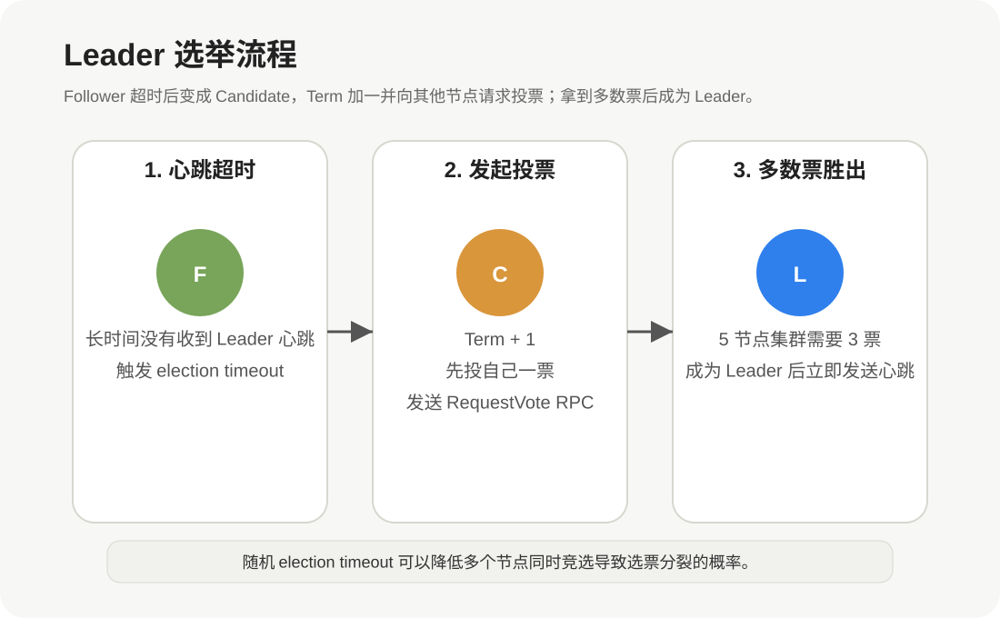
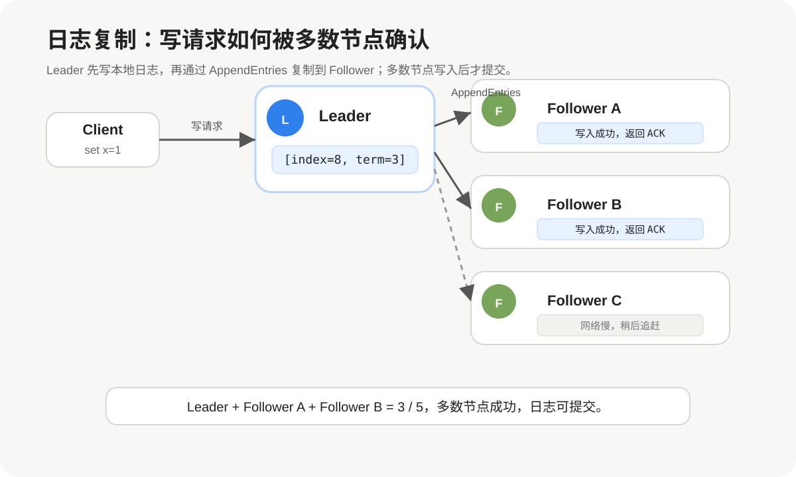
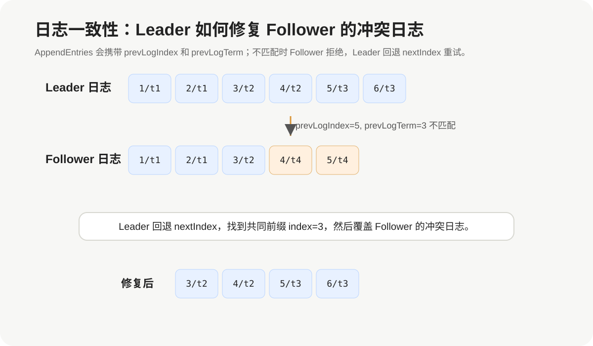

Raft 协议详解
1. Raft 是什么
Raft 是一种分布式一致性算法，用于让多台机器在不可靠网络中，对同一份状态达成一致。
它解决的核心问题是：
多个节点共同维护一份数据，即使部分节点宕机、网络抖动、消息乱序，系统仍然能对外表现得像一个可靠的单机状态机。
Raft 常见于：
- etcd
- Consul
- TiKV / PD
- CockroachDB
- HashiCorp Nomad
- 一些自研配置中心、元数据服务、分布式锁服务
Raft 的目标不是追求最高性能，而是追求正确性、可理解性和可工程实现性。
2. Raft 要解决的问题
假设有一个配置中心，里面保存一条配置：
feature_x_enabled = false
如果只有一台机器，写入很简单：
client -> server -> 写入本地磁盘 -> 返回成功
但如果有 3 台机器：
Node A
Node B
Node C
客户端写入：
feature_x_enabled = true
就会出现一堆问题：
- 应该写哪台机器？
- 写入一台成功算不算成功？
- 如果写到一半 Leader 宕机怎么办？
- 如果网络分区，两个节点都以为自己是主怎么办？
- 节点恢复后，如何追上最新数据？
- 多个客户端并发写入，顺序如何保证？
Raft 的答案是：
通过 Leader 统一处理写入；
通过日志复制把写入同步到多数节点；
通过任期和投票保证同一任期只有一个 Leader；
通过日志匹配和提交规则保证状态机顺序一致。
3. Raft 的核心思想
Raft 可以拆成三个核心问题：
| 问题 | Raft 的解决方式 |
|---|---|
| 谁来处理写请求 | Leader 选举 |
| 写入如何同步到其他节点 | 日志复制 |
| 怎样保证崩溃恢复后仍然一致 | 日志匹配、提交规则、快照 |
Raft 把复杂的一致性问题拆成几个更容易理解的子问题：
Leader Election -> 选出唯一 Leader
Log Replication -> Leader 把日志复制到 Follower
Safety -> 保证已提交日志不会丢失或被覆盖
Membership -> 支持集群成员变更
Snapshot -> 压缩日志，避免无限增长
4. Raft 的节点角色
Raft 中每个节点只会处于三种角色之一：

| 角色 | 说明 |
|---|---|
| Leader | 集群领导者，处理客户端写请求，向 Follower 复制日志 |
| Follower | 默认角色，被动接收 Leader 的心跳和日志 |
| Candidate | 候选者，Leader 超时后发起选举 |
4.1 Follower
Follower 是最普通的状态。
它不主动发起写入，也不主动复制日志，只做三件事：
- 接收 Leader 的心跳。
- 接收 Leader 发来的日志。
- 在选举时给 Candidate 投票。
如果 Follower 在一段时间内没有收到 Leader 心跳，就会认为 Leader 可能宕机，然后转为 Candidate 发起选举。
4.2 Candidate
Candidate 是选举期间的临时角色。
节点变成 Candidate 后会：
- 增加自己的
currentTerm。 - 给自己投一票。
- 向其他节点发送
RequestVote请求。 - 如果拿到多数票，就成为 Leader。
4.3 Leader
Leader 是集群中唯一对外处理写请求的节点。
Leader 负责：
- 接收客户端写请求。
- 把写请求转成日志条目。
- 复制日志到 Follower。
- 在多数节点确认后提交日志。
- 定期发送心跳，维持领导权。
5. Term：Raft 的逻辑任期
Raft 使用 Term 表示逻辑时间。
可以把 Term 理解为“第几届领导任期”：
Term 1: Node A 是 Leader
Term 2: Node B 是 Leader
Term 3: Node C 是 Leader
Term 有几个关键规则：
- 每次发起新选举，Term 加一。
- 节点只承认 Term 更大或相同的消息。
- 如果 Leader 收到更大 Term 的消息，必须退化为 Follower。
- 同一个 Term 中最多只能有一个 Leader。
Term 是 Raft 防止旧 Leader 继续作恶的关键机制。
例如：
Node A 曾经是 Term 3 的 Leader。
后来网络分区，Node B 在 Term 4 当选 Leader。
Node A 网络恢复后，如果还想用 Term 3 发送日志，会被其他节点拒绝。
因为 Term 4 比 Term 3 新，旧 Leader 必须让位。
6. Leader 选举
Leader 选举解决的问题是：
当前 Leader 不可用时，集群如何选出新的 Leader，并保证同一任期最多只有一个 Leader？

6.1 选举触发条件
Follower 会等待 Leader 的心跳。
如果超过 election timeout 还没有收到心跳，Follower 就认为 Leader 不可用，开始选举。
Follower 等待心跳
-> 超过 election timeout
-> 转为 Candidate
-> 发起选举
6.2 随机选举超时
Raft 的 election timeout 通常是随机值，例如：
150ms ~ 300ms
为什么要随机？
因为如果所有 Follower 同时超时，就可能同时变成 Candidate，然后互相抢票，导致谁也拿不到多数票。
随机超时可以降低“同时竞选”的概率。
6.3 投票规则
Candidate 发起投票时，会向其他节点发送 RequestVote RPC。
Follower 是否投票，主要看两个条件：
- 当前 Term 内还没有投过票。
- Candidate 的日志至少和自己一样新。
这里第二点很关键。
Raft 不能让日志落后的节点当 Leader，否则它可能覆盖掉已经提交的日志。
6.4 多数派原则
Candidate 必须拿到多数票才能成为 Leader。
| 集群节点数 | 多数票数量 |
|---|---|
| 3 | 2 |
| 5 | 3 |
| 7 | 4 |
为什么是多数派？
因为两个多数派一定会有交集。
以 5 节点为例：
多数派至少 3 个节点。
任意两个 3 节点集合，一定至少有 1 个节点重叠。
这个交集保证了新 Leader 不会完全绕过旧的已提交日志。
6.5 选票分裂
选票分裂指多个 Candidate 同时参选，票数被分散：
5 节点集群：
Node A 得 2 票
Node B 得 2 票
Node C 得 1 票
没有人拿到 3 票，选举失败。
此时会进入下一轮 Term，重新选举。
随机 election timeout 会让某个节点更早发起下一轮选举，从而更容易拿到多数票。
7. 日志复制
Leader 选出来之后，所有写请求都交给 Leader。
Raft 不直接把数据写入状态机，而是先写入日志：
客户端命令 -> Leader 日志 -> Follower 日志 -> 多数确认 -> 提交 -> 应用到状态机

7.1 日志条目的结构
Raft 的每条日志通常包含：
| 字段 | 说明 |
|---|---|
| index | 日志位置，单调递增 |
| term | 生成该日志时的 Leader 任期 |
| command | 客户端命令 |
例如：
index=8, term=3, command="set x=1"
index 用来表示顺序，term 用来判断这条日志来自哪一任 Leader。
7.2 写入流程
一次写请求大致经历以下步骤：
- Client 向 Leader 发送写请求。
- Leader 把命令追加到本地日志。
- Leader 通过
AppendEntries RPC发送给 Follower。 - Follower 校验通过后追加日志。
- Follower 返回成功。
- Leader 收到多数节点成功响应。
- Leader 标记该日志为 committed。
- Leader 把命令应用到状态机。
- Leader 返回客户端写入成功。
7.3 为什么要多数节点确认
如果只写 Leader 就返回成功，那么 Leader 宕机后，这条日志可能丢失。
Raft 要求日志被多数节点保存后才能提交：
5 节点集群：
Leader 本地写入成功
Follower A 写入成功
Follower B 写入成功
共 3 个节点写入成功，达到多数派，可以提交。
即使 Leader 随后宕机，新 Leader 也一定能从多数派交集中看到这条日志。
8. committed、applied 和状态机
Raft 中有两个容易混淆的概念：
| 概念 | 说明 |
|---|---|
| committed | 日志已经被多数节点确认，可以认为不会丢 |
| applied | 日志已经被应用到本地状态机 |
一个日志条目可能已经 committed，但还没 applied。
流程是：
日志复制成功
-> 多数确认
-> committed
-> 按顺序应用到状态机
-> applied
状态机可以理解为真正的数据存储逻辑。
例如日志是：
index=8, command="set x=1"
应用到状态机后，才会真正变成：
x = 1
Raft 保证所有节点以相同顺序应用相同日志，所以最终状态一致。
9. 日志一致性检查
网络故障、Leader 崩溃、Follower 掉线都会导致节点日志不一致。
Raft 通过 prevLogIndex 和 prevLogTerm 修复冲突。

9.1 AppendEntries 的关键字段
Leader 向 Follower 复制日志时，不只是发送新日志，还会带上前一条日志的信息：
prevLogIndex
prevLogTerm
entries
leaderCommit
含义：
| 字段 | 说明 |
|---|---|
| prevLogIndex | 新日志前一条日志的 index |
| prevLogTerm | 新日志前一条日志的 term |
| entries | 要复制的新日志 |
| leaderCommit | Leader 当前已提交的位置 |
Follower 收到后会检查：
我本地 prevLogIndex 位置的日志 term 是否等于 prevLogTerm？
如果相等，说明前缀一致，可以追加。
如果不相等，说明日志冲突，拒绝追加。
9.2 冲突修复过程
假设 Leader 的日志是：
1/t1 2/t1 3/t2 4/t2 5/t3 6/t3
Follower 的日志是：
1/t1 2/t1 3/t2 4/t4 5/t4
从 index=4 开始冲突。
Leader 会不断回退该 Follower 的 nextIndex，直到找到共同前缀：
共同前缀：1/t1 2/t1 3/t2
然后 Leader 用自己的日志覆盖 Follower 的冲突部分：
Follower 修复后：
1/t1 2/t1 3/t2 4/t2 5/t3 6/t3
9.3 日志匹配性质
Raft 有一个重要性质：
如果两个日志条目拥有相同的 index 和 term，那么它们之前的所有日志也相同。
这就是日志一致性检查的基础。
Leader 每次复制日志都检查前一条日志是否匹配，最终可以保证所有 Follower 的日志逐渐向 Leader 对齐。
10. Leader 完整性
Raft 有一个非常重要的安全性质：
如果某条日志在某个 Term 被提交，那么未来所有 Leader 都必须包含这条日志。
这叫 Leader Completeness。
它靠两个机制保证：
- Candidate 必须拥有足够新的日志，Follower 才会投票。
- Leader 只有在当前 Term 的日志被多数复制后，才能推进 commit。
10.1 什么叫日志足够新
投票时，Follower 会比较 Candidate 的日志新旧：
- 先比较最后一条日志的
term。 - 如果
term相同，再比较最后一条日志的index。
规则：
lastLogTerm 更大，日志更新。
lastLogTerm 相同但 lastLogIndex 更大，日志更新。
如果 Candidate 的日志比 Follower 还旧，Follower 不会投票。
10.2 为什么旧日志不能随便提交
Raft 对提交有一个细节：
Leader 不能仅通过多数复制来提交旧 Term 的日志；必须通过提交当前 Term 的日志，间接提交之前的日志。
这个规则是为了避免某些极端故障场景下，旧 Leader 的未提交日志被错误认为已提交。
实际理解时可以记住：
当前 Leader 只有把自己当前 Term 的日志复制到多数派后，才能安全推进 commitIndex。
11. 心跳机制
Raft 的心跳本质上是空的 AppendEntries RPC。
Leader 会定期向所有 Follower 发送心跳：
Leader -> Follower: AppendEntries(entries=[])
心跳有两个作用：
- 告诉 Follower：Leader 还活着，不要发起选举。
- 携带
leaderCommit，通知 Follower 推进提交位置。
如果 Follower 在 election timeout 内持续收到心跳，就会一直保持 Follower 状态。
12. 读请求如何处理
写请求必须走 Leader，这点很清楚。
读请求有几种处理方式。
12.1 读 Leader 本地状态
最简单的方式是直接读 Leader 的状态机。
但这里有风险：
旧 Leader 可能因为网络分区已经失去领导权，
却还不知道自己已经不是 Leader。
如果它直接返回本地旧数据，可能产生过期读。
12.2 ReadIndex
更安全的方式是 ReadIndex。
Leader 在返回读结果前，先向多数节点确认自己仍然是 Leader：
Leader 发起心跳确认
-> 多数节点响应
-> 证明自己仍是合法 Leader
-> 等待本地 apply 到 readIndex
-> 返回读结果
etcd 的线性一致读就使用类似机制。
12.3 Lease Read
Lease Read 基于时间租约：
只要 Leader 租约未过期，就认为自己仍是 Leader，可以直接读本地状态。
它性能更好，但依赖时钟假设。
如果系统时钟漂移严重，Lease Read 的正确性会受影响。
13. 快照与日志压缩
Raft 日志不能无限增长。
如果系统运行很久，日志可能达到：
index=1 ... index=100000000
全部保留会浪费磁盘，并且新节点追赶日志会非常慢。
所以 Raft 会使用快照。
13.1 快照是什么
快照是状态机在某个日志位置的完整状态。
例如：
lastIncludedIndex = 10000
lastIncludedTerm = 8
state = 当前所有 key-value 数据
有了快照后，节点就可以删除 10000 之前的旧日志。
旧日志：
1 ... 10000 ... 12000
压缩后：
snapshot(index=10000) + log(10001 ... 12000)
13.2 InstallSnapshot
如果某个 Follower 落后太多，Leader 已经没有它需要的旧日志，就会发送快照：
Leader -> Follower: InstallSnapshot
Follower 安装快照后，从快照位置继续接收后续日志。
14. 集群成员变更
Raft 集群有时需要增加或删除节点。
例如：
3 节点 -> 5 节点
5 节点 -> 3 节点
成员变更不能简单地直接修改配置，否则可能出现两个不同多数派，导致脑裂。
Raft 论文中使用 Joint Consensus 处理成员变更。
14.1 Joint Consensus
Joint Consensus 会经历两个阶段：
旧配置 Cold
-> 联合配置 Cold,new
-> 新配置 Cnew
在联合配置阶段，一条日志必须同时被旧配置多数派和新配置多数派确认，才算提交。
这样可以保证配置切换期间不会出现两个互不相交的多数派。
14.2 工程中的简化方案
很多实现会使用更容易工程化的方式：
一次只变更一个节点
例如：
3 节点 A/B/C
先添加 D -> A/B/C/D
再添加 E -> A/B/C/D/E
不要一次性大规模替换节点。
15. Raft 的安全性总结
Raft 的正确性依赖几个关键安全性质：
| 安全性质 | 含义 |
|---|---|
| Election Safety | 同一个 Term 最多只有一个 Leader |
| Leader Append-Only | Leader 只追加日志，不覆盖自己的日志 |
| Log Matching | 相同 index 和 term 的日志拥有相同历史前缀 |
| Leader Completeness | 已提交日志一定会出现在未来 Leader 中 |
| State Machine Safety | 如果某节点在某 index 应用了日志，其他节点不会在同 index 应用不同日志 |
这些性质共同保证：
只要一条命令被提交，它就不会丢失，也不会被另一条命令替换。
16. Raft 与 Paxos 的区别
Raft 和 Paxos 都是共识算法，但设计目标不同。
| 对比项 | Raft | Paxos |
|---|---|---|
| 设计目标 | 易理解、易实现 | 理论简洁但较抽象 |
| 领导者 | 强 Leader 模型 | Multi-Paxos 中通常也有 Leader |
| 日志复制 | 围绕 Leader 展开 | 由多个 Paxos instance 组成 |
| 工程可读性 | 更友好 | 学习成本更高 |
| 常见应用 | etcd、Consul、TiKV PD | Chubby、Spanner 等系统思想基础 |
Raft 并不是比 Paxos “更强”，而是更适合工程学习和落地。
17. Raft 与主从复制的区别
很多人会把 Raft 理解成“主从复制”，但二者差别很大。
| 对比项 | 普通主从复制 | Raft |
|---|---|---|
| Leader 选举 | 可能依赖人工或外部组件 | 协议内置 |
| 写入确认 | 可同步也可异步 | 多数派确认后提交 |
| 脑裂处理 | 依赖额外机制 | Term + 多数派约束 |
| 故障恢复 | 实现差异大 | 有明确日志修复规则 |
| 一致性语义 | 通常较弱 | 可提供强一致基础 |
普通主从复制关注“把数据复制过去”，Raft 关注“在故障下仍能确定哪份数据是被提交的真相”。
18. 常见故障场景分析
18.1 Leader 宕机
流程：
Leader 宕机
-> Follower 收不到心跳
-> election timeout
-> 发起选举
-> 新 Leader 当选
-> 继续处理写入
只要多数节点还活着，集群就能恢复服务。
18.2 少数节点宕机
以 5 节点为例：
宕机 1 个：剩余 4 个，仍有多数派
宕机 2 个：剩余 3 个，仍有多数派
宕机 3 个：剩余 2 个，没有多数派
没有多数派时，Raft 不能提交新日志。
这是正确性的代价。
18.3 网络分区
假设 5 节点分裂为：
分区 A：3 个节点
分区 B：2 个节点
只有分区 A 能选出 Leader，因为它拥有多数派。
分区 B 即使有旧 Leader，也无法提交新日志。
当网络恢复后，分区 B 的节点会发现更高 Term 或更新日志，然后追随新 Leader。
18.4 旧 Leader 恢复
旧 Leader 恢复后，如果发现别人的 Term 更大：
旧 Leader -> Follower
它不能继续接受写入。
如果它有未提交的旧日志，这些日志可能会被新 Leader 覆盖。
注意：只有未提交日志可以被覆盖，已提交日志不能被覆盖。
19. 工程实现中的关键字段
一个 Raft 节点通常需要维护以下状态。
19.1 所有节点持久化状态
这些状态必须持久化到磁盘，崩溃恢复后不能丢：
| 字段 | 说明 |
|---|---|
| currentTerm | 当前任期 |
| votedFor | 当前任期投给了谁 |
| log[] | 日志条目 |
如果 votedFor 没有持久化，节点重启后可能在同一个 Term 投两票，破坏 Election Safety。
19.2 所有节点易失状态
| 字段 | 说明 |
|---|---|
| commitIndex | 已知已提交的最高日志 index |
| lastApplied | 已应用到状态机的最高日志 index |
19.3 Leader 专属状态
Leader 会为每个 Follower 维护：
| 字段 | 说明 |
|---|---|
| nextIndex[] | 下一次要发送给该 Follower 的日志 index |
| matchIndex[] | 该 Follower 已复制成功的最高日志 index |
例如：
Follower A matchIndex = 10
Follower B matchIndex = 12
Follower C matchIndex = 8
Leader 根据这些值判断哪些日志已经被多数节点复制。
20. 实现 Raft 时容易踩的坑
20.1 忘记持久化 currentTerm 和 votedFor
这是严重 Bug。
如果节点重启后忘记自己投过票，可能在同一 Term 给多个 Candidate 投票。
后果：
同一 Term 可能出现多个 Leader
20.2 收到更大 Term 没有立刻降级
任何节点只要看到更大的 Term，都应该更新自己的 Term 并转为 Follower。
包括：
- Leader
- Candidate
- Follower
20.3 提交旧 Term 日志
Leader 不应该仅凭“某条旧 Term 日志被多数复制”就直接提交它。
正确方式是：
通过提交当前 Term 的日志，间接提交之前的旧日志。
20.4 apply 顺序错误
状态机必须按日志 index 顺序 apply。
不能出现：
先 apply index=10
再 apply index=9
否则不同节点状态可能不一致。
20.5 锁粒度和 RPC 死锁
实现 Raft 时经常会遇到：
持有 Raft 锁 -> 发 RPC -> RPC 回调里又要拿锁
这容易造成死锁或性能问题。
常见实践是：
- 在锁内复制必要状态。
- 释放锁。
- 发起 RPC。
- RPC 返回后重新加锁校验状态是否仍然有效。
21. Raft 的性能特点
21.1 写入延迟
Raft 写入至少需要：
Client -> Leader
Leader -> Follower
Follower -> Leader
Leader -> Client
也就是一次多数派复制往返。
因此 Leader 和多数 Follower 的网络延迟会直接影响写入延迟。
21.2 读性能
读性能取决于一致性要求：
| 读类型 | 性能 | 一致性 |
|---|---|---|
| Follower 本地读 | 高 | 可能读到旧数据 |
| Leader 本地读 | 高 | 需要防旧 Leader |
| ReadIndex | 中 | 线性一致 |
| Lease Read | 高 | 依赖时钟假设 |
21.3 集群规模
Raft 不适合把集群节点数做得很大。
常见规模：
3 节点：容忍 1 个节点故障
5 节点：容忍 2 个节点故障
7 节点：容忍 3 个节点故障
节点越多：
- 复制开销越大
- Leader 维护的连接越多
- 多数派确认可能更慢
生产中 3 或 5 节点最常见。
22. Raft 在 etcd 中的直观理解
etcd 是 Kubernetes 的核心元数据存储，底层使用 Raft。
当 Kubernetes API Server 写入一个对象，例如创建 Pod：
kubectl apply -f pod.yaml
-> kube-apiserver
-> etcd Leader
-> Raft 日志复制
-> 多数 etcd 节点确认
-> 提交成功
-> 返回 API Server
这就是为什么 etcd 集群要求奇数节点，通常是 3 或 5 个。
如果 etcd 失去多数派，Kubernetes 控制面就无法可靠写入状态。
23. 常用排查思路
23.1 频繁 Leader 切换
可能原因：
- 网络延迟或丢包
- election timeout 设置过小
- Leader 节点 CPU 或磁盘压力大
- GC 停顿导致心跳延迟
排查方向：
查看 Leader 变更次数
查看节点网络延迟
查看磁盘 fsync 延迟
查看 CPU / 内存 / GC
23.2 Follower 长期落后
可能原因：
- Follower 网络慢
- Follower 磁盘写入慢
- Leader 发送日志积压
- Follower 重启后需要安装快照
排查方向：
查看 raft apply index
查看 raft commit index
查看 snapshot 发送情况
查看磁盘 IO
23.3 写入延迟高
可能原因：
- Leader 到多数节点 RTT 高
- 磁盘 fsync 慢
- 日志复制批量过小
- Leader 负载过高
优化方向：
把 Raft 节点部署在低延迟网络中
使用稳定低延迟磁盘
避免跨地域组成单个 Raft 集群
控制集群节点数量
24. 面试常见问题
Q1：Raft 为什么需要多数派
多数派的核心价值是保证任意两个成功决策集合有交集。
这个交集能把已经提交的日志传递到未来 Leader 选举中，避免已提交数据丢失。
Q2：Raft 如何避免脑裂
Raft 通过以下机制避免脑裂：
- 同一 Term 每个节点最多投一票。
- Candidate 必须拿到多数票。
- 两个多数派必然有交集。
- 旧 Term Leader 收到更大 Term 后必须退化。
Q3：Leader 宕机时，已经写入 Leader 但还没复制到多数派的日志怎么办
这类日志没有 committed，不保证成功。
新 Leader 产生后，可能会覆盖这些未提交日志。
客户端如果没有收到成功响应，需要重试。
Q4：Follower 能不能处理写请求
一般不能。
Follower 收到写请求后通常会：
返回 Leader 地址，让客户端重定向到 Leader。
所有写入都由 Leader 排序，才能保证日志顺序一致。
Q5：Raft 为什么通常使用奇数节点
因为偶数节点不会提升容错能力，反而增加成本。
例如：
| 节点数 | 多数派 | 可容忍故障数 |
|---|---|---|
| 3 | 2 | 1 |
| 4 | 3 | 1 |
| 5 | 3 | 2 |
4 节点和 3 节点一样只能容忍 1 个故障，但 4 节点需要更多资源。
25. 学习 Raft 的抓手
学习 Raft 时，不要一开始陷入所有 RPC 细节。
可以按下面顺序理解：
- 先理解 Leader 模型：所有写入都走 Leader。
- 再理解多数派：提交必须被多数节点确认。
- 再理解 Term：新任期压制旧任期。
- 再理解日志匹配：用 index + term 找共同前缀。
- 最后理解安全性：为什么已提交日志不会丢。
记住这句话：
Raft 的本质是：用 Leader 排序，用多数派确认，用 Term 区分新旧权力，用日志匹配修复分歧。
26. 总结
Raft 是一种工程上非常重要的一致性算法。
它的核心机制可以概括为：
| 机制 | 作用 |
|---|---|
| Leader 选举 | 选出唯一写入入口 |
| Term | 区分新旧领导权 |
| 日志复制 | 把客户端命令复制到多数节点 |
| 多数派提交 | 保证已提交日志不会丢失 |
| 日志匹配 | 修复 Follower 的冲突日志 |
| 快照 | 压缩历史日志，提升恢复效率 |
| 成员变更 | 安全调整集群节点 |
如果只记一句话：
Raft 通过一个 Leader 给所有写请求排序，再把日志复制到多数节点；只要日志被多数节点确认，它就会被提交，并且未来 Leader 必须包含它。
理解了这条主线，再看 etcd、Consul、TiKV 这类系统的高可用设计，就会清楚很多。